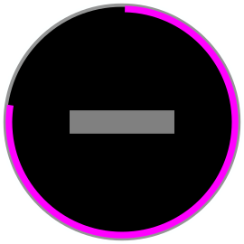

Progress Bars
At points where your app needs to do something asynchronous, you should present an indication that the user needs to wait. Progress bars provide a full-page experience that communicates progress. If you don't have a known progress end point, you can use an infinite progress mode.
Percent Progress:
Infinite Progress:

Best Practices
Provide a back behavior in case the user wants to cancel the action.
Be informative, so the user understands what process is taking place.
If there are multiple processes taking place one after another, try to represent the progress for these in one progress bar, or use the infinite progress. Use the message to keep the user apprised of status.